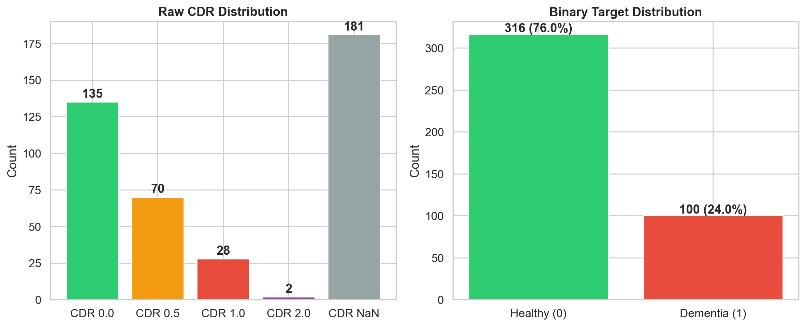
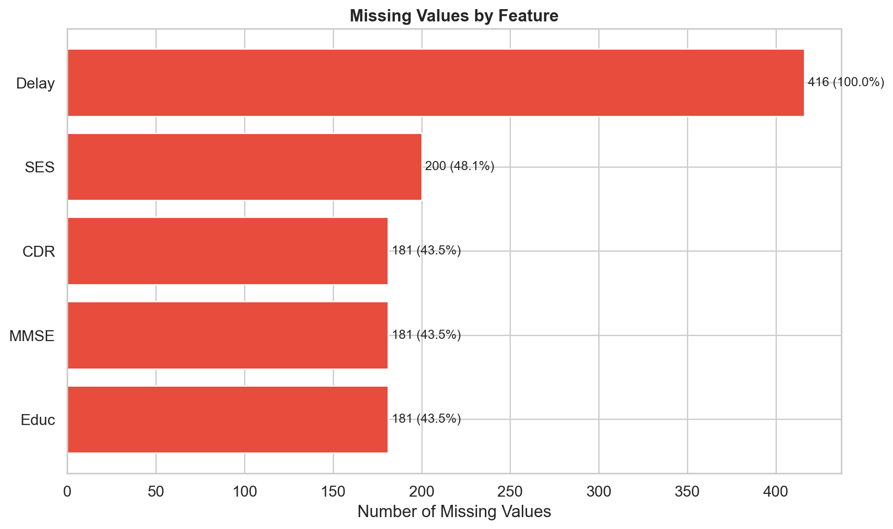
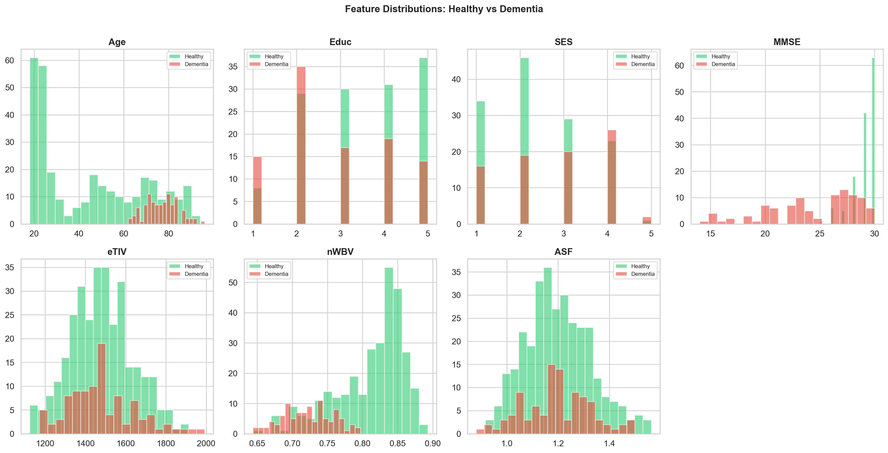
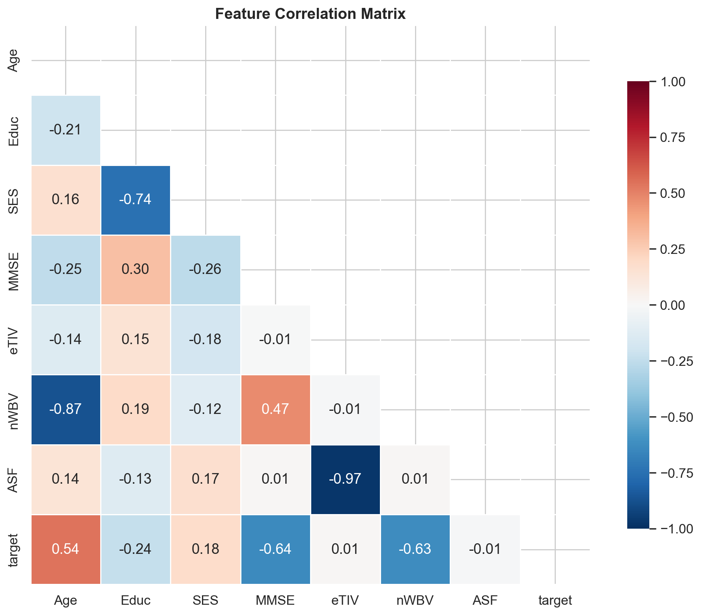
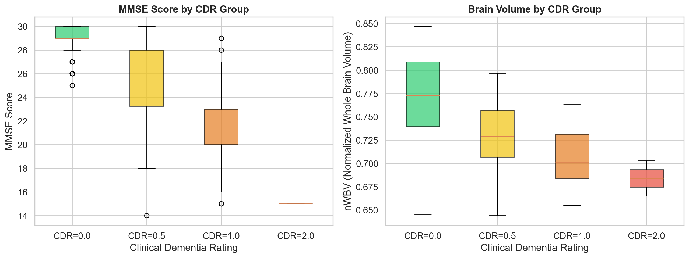
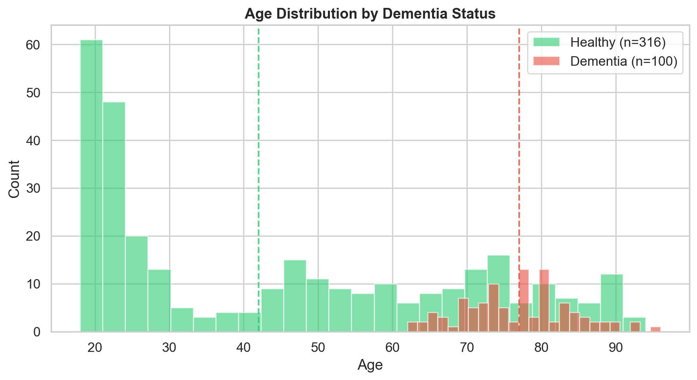
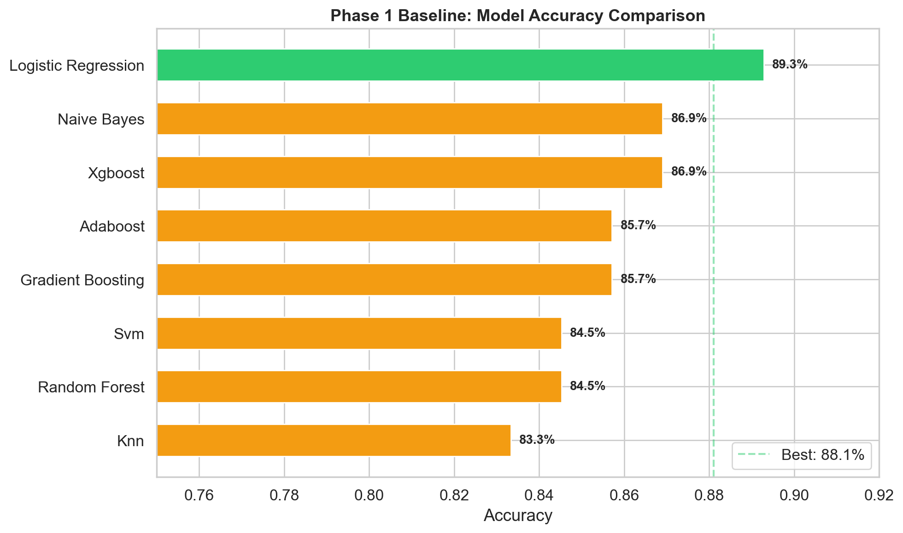
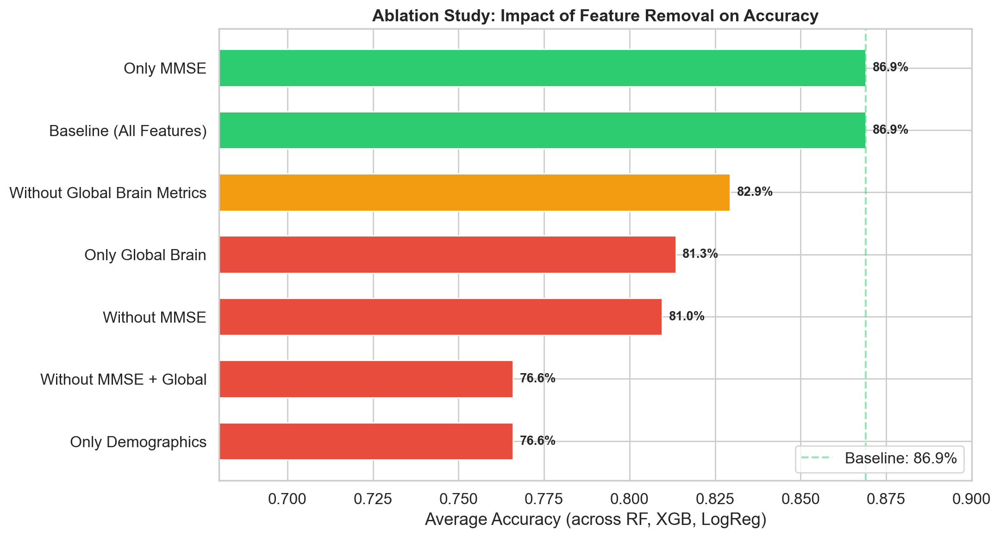
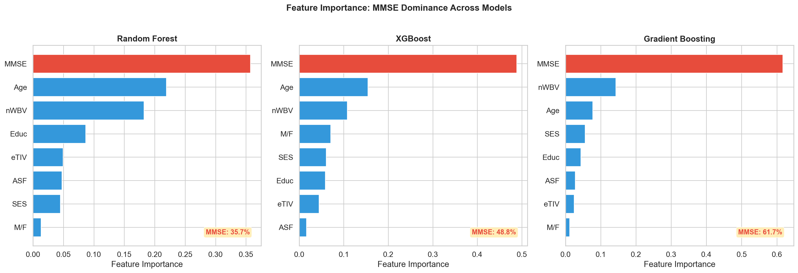

Click Run Inference to run the full-feature XGBoost model on this patient's MRI session.
Deep dive into the OASIS-1 Dataset, feature relationships, and Phase 1 vs Phase 2 modeling results.
Shows the dataset balance between Demented and Non-Demented patient scans.

Highlights variables requiring imputation, primarily Socioeconomic Status (SES).

Visualizes clinical feature overlaps and separations between patient groups.

Maps statistical relationships, revealing strong ties between MMSE and CDR.

Demonstrates how MMSE drops and brain volume shrinks as Dementia progresses.

Shows age distributions, emphasizing Alzheimer's prevalence in older patients.

Compares clinical-only models, showing XGBoost and Random Forest superiority.

Proves that adding tissue and regional MRI features massively improves accuracy.

Detailed breakdown of exactly which clinical variables the trees rely on most.
